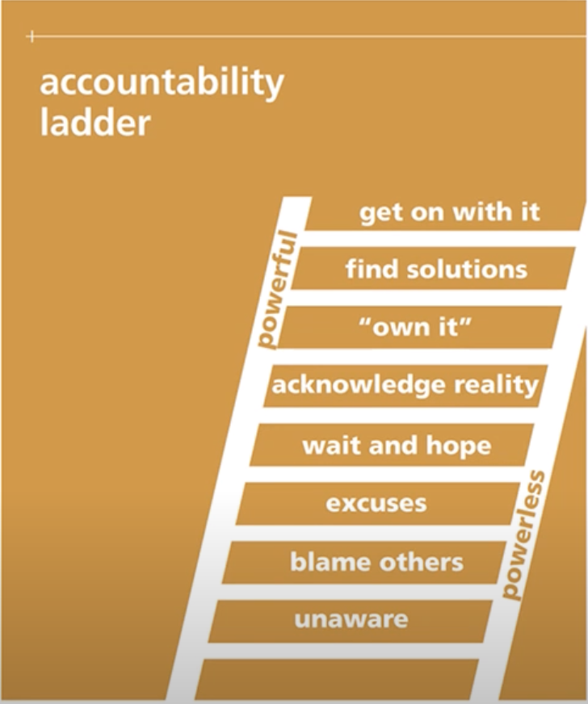
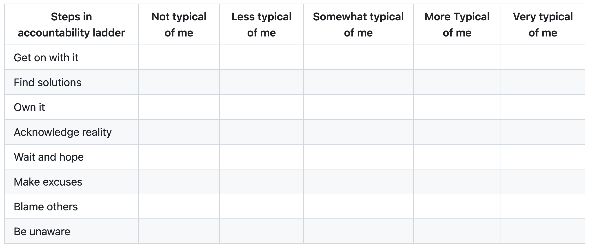

Accountability
“It is not only what we do, but also what we do not do, for which we are accountable.” — Molière
A General Definition of Accountability
Accountability is an obligation or willingness to accept responsibility, take responsibility for one’s actions, and not waste time or effort on distracting activities or other unproductive behaviors.
What steps can you take to enhance accountability in team building and statistical consulting?
Set clear expectation that are specific, measurable, attainable, and trackable.
Create a detailed project plan that includes timelines, details of deliverables, clarifying who should be responsible for what task, and clearly defining roles so members face ownership and take charge of their work.
Have regular conversations, share updates, discuss challenges and what is getting in the way of reaching milestones,
Help individual team members align their work with the long-term goal of the project and realize that their work impacts the big picture.
Have team members provide short written updates on the progress of the work on the assigned task.
Have all team members read the written progress reports and provide their input.
Following the above steps helps to give a structure and a formulation to the project, improves team dynamics and helps members realize that individual work matters and has impact on team success. This way accountability becomes an ongoing process for filling the gaps in the performance of the team members or when things go wrong.
Characteristics of accountable individuals
Accountable individuals are effective at setting goals and designing multiple strategies to reach them. They categorize their objectives based on urgency and importance and try to meet them within the given time frame. One method would be to categorize the goals of the project into four categories including: “important and urgent task",”important and un-urgent task", “unimportant and urgent task", and”unimportant and unurgent task". Sometimes one needs to prioritize an urgent but unimportant task.
Accountable individuals do not blame others and circumstances for the outcome of their work, try to meet new challenges that come their way, and are in charge of their actions. They are practical and result- oriented. They focus on their circle of influence and concentrate on working with individuals who are collaborative, productive, and are willing to work toward team goals. They find a way to deal with reactive people, i.e., individuals who respond to stimulus, move by the moment, and are unpredictable; rather than trying to find the appropriate solution to the problem at hand and committing to it.
Accountable individuals behave more like leaders than bosses. They…
Listen carefully to suggestions rather than imposing their viewpoints,
Believe in team work and value their team by developing bonds and trust in them,
Assign tasks to team members based on their skills and interests; thus helping them feel that they are an integral part of reaching the team’s goal,
Help the team members to uncover their hidden abilities and creativity,
Feel that they are helping reach the team goal, and
Boost their mind and body by engaging in activities such as exercise, healthy eating, listening to music, contributing to other people’s lives, and giving back to the community in one form or another.
How does accountability overlap with other dimensions of team building?
In addition to accountability, the other dimensions that we discussed include: 1) active listening, 2) communication, 3) empathy, 4) flexibility, 5) locus of control, and 6) conflict resolution. In the following we will try to elaborate the relationship of accountability with the other six dimensions of effective team building.
Relationship of accountability with active listening
The first step in any consulting project starts with having the client tell the statistical consultant what the problem is all about. In the majority of cases, the statistical consultant is not familiar with the discipline and specialty of the client. Thus, the context of the problem could be related to medicine, engineering, psychology, public health etc. and unfamiliar to the consultant. So, the first step that an accountable statistical consultant needs to follow is to have an accurate and clear understanding of the problem at hand. Thus, the statistical consultant needs to listen carefully, ask for clarification of unfamiliar terms, write the problem down, and read it back to the client to make sure they are in agreement about what the problem to be solved.
Relationship of accountability with communication
Communication is key from the inception to the completion of any project. As a first steps the objectives of the project need to be communicated clearly both in written and oral format to team members, the client, and the statistical consultant. After the inception of the project, oral and verbal communication need to be an integral part of all milestones of the project including: 1) regular check ins, 2) actual and virtual meetings with the client and team members, 3) progress report, 4) oral presentation of the final findings, and 5) final report.
Relationship of accountability with empathy
Forbes has an interesting article on how one can create a balance between empathy and accountability in the workplace between leaders and employees. In spite of the fact that we are discussing accountability in team work and not in the workplace, yet the ideas are generalizable. In the following, Forbes’ guidelines will be used to illustrate the relationship between empathy and accountability in successful team building.(Forbes Nonprofit Council 2021)
Recommendations for teams
Set Clear expectations
Setting clear objectives with which all team members agree is the first step to making a balance between empathy and accountability. Team members need to know what they will be held accountable for, have the opportunity to learn the relevant skills, ask questions, receive feedback, and discuss what is working and what is not.
Pay attention to the well-being of the team
Pay attention to how your team members are doing and help with their needs. Being aware of teams’ shortcomings, what new things they need to learn and following their growth is an integral part of success. For example, in some consulting projects, it has come to our attention that the team members need to use statistical methods they are not familiar with, an example of which was “logistic regression with rare events". We provided the team with a small data set as well as a short YouTube for running the analysis and interpretation of results and ascertained that they knew how to run the analysis and interpret the findings within context.
Build Trust: A path to combining empathy and accountability
Individual communication and conversation with team members helps to clarify the role and expectations of each team member and helps to establish trust.
Consequently the established trust helps to bind empathy and accountability.
Encourage communication among team members
Empathy and accountability go hand-in-hand, and striking a balance between
the two is crucial for creating a work environment where employees and team members can
thrive. In order to maintain accountability, clear boundaries need to be set.
The only way to set clear boundaries that everyone agrees on is to understand
where your employees and team members are coming from and making sure they can work well
together.
Create an effective communication system between team members
We need to ascertain that team members are heard and they feel like an integral part of a community, not an individual trying to complete a piece of the puzzle. There are many ways to do this. An example is setting milestones for the project and having all team members participate in explaining the progress. This is another good strategy for combining empathy and accountability.
Use Measurable objectives and flexibility to enhance accountability
Since the start of the pandemic, both academic and non-academic institutions have learned to be more flexible in their approach to team work. Having clear and measurable objectives have helped teams to be focused on their work. Flexible team meetings on zoom have also played a key role with reaching the relevant objectives.
Create a balance between empathy and accountability
Team members need to know what parts are non-negotiable ad where are the areas in which they can use their creativity and have control over the methods and resources. For example, in some consulting projects the client insists on having a p-value associated with whatever analysis that is being conducted. This is because the journals in which the clients publish their work requires p-values associated with relevant analysis. Another example are situations in which a power analysis is required and the statistical analysis needs to show that the sample size used in large enough to guarantee the power of interest. These are examples of a non-negotiable situations. Whereas, in some instances, the client is interested in an exploratory data analysis and learning more about the nature of the problem at hand. In these situations, team members are free to use their creativity and employ methods such as creation of relevant visuals, non-parametric statistic, and boot strapping to explain the client’s question of interest.
Establish And Define Consistent Accountability
Establish accountability clearly at the beginning of the project by clearly assigning tasks to members. Explain that accountability is tied to coming up with a successful solution to problem at hand and thus to productivity. When accountability is established at the beginning of the project, then creating a balance between empathy and accountability does not become a challenge.
Create a balance between firmness and team support
Statistical consultants who work on various projects with multiple teams need to create a healthy balance between firmness and member support. There is so much direct and one-on-one contact that a statistical consultant can have with individual team members. However, through clear objectives, consistent and multiple progress reports through the life of the project, they can communicate the importance of meeting the overall goals of the project with individual members; without ignoring or having special consideration individual employees or team members.
Focus on developing relationships with team members
In order to promote solving the problem at hand, statistical consultants and managers who work with multiple projects and different members should not suffice with setting clear objectives and expectations. They should also work toward developing relationship with team members, having empathy for their particular circumstances and giving them the message that they care about them. Consequently, team members will have respect for them as well as a sense of responsibility toward meeting the objectives of the project.
In the statistical consulting classes that we teach, every quarter we have an average of seventy to eighty students in two sections. These students are divided into teams of four to six and work with real clients to solve a real world problem. This means that each quarter we are dealing with 15 to twenty teams of students and this is not very different from a managerial positions. Experience has shown that developing relationship with team members does not happen through simple conversation or small talk. It happens through interaction with team members during the steps outlined above. When members are helped to feel that they have contributed to solving the problem at hand and have been accepted as an integral part of the team, relationships are built.
Another situation that comes up in working with teams is when a member reaches out and expresses concern. Experience has shown that problems of this nature cannot be solved over email. The best way is to have a one-on-one meeting with this member in person or over zoom and at a time when none of you is in a rush. Then calmly discuss the situation and try to find out what the problem is. Come up with a strategy to solve the problem and make the unhappy member part of the solution and not the problem. Then, in your quick check-ins or meetings with the team, casually mention that you and member X have been talking about solving the problem the team is working on, and member X thinks that s(he) can contribute to solving the problem assigned to the team by performing tasks X, Y, and Z.
For developing relationship with team members, there are really no fast and hard rules to follow. It depends on what works given the circumstances. It is all about finding and devising strategies that help team members: 1) feel they are accepted and respected by other members, 2) believe they are playing a constructive role in solving the problem, and 3) feel like part of the solution and not the problem.
Relationship of accountability with flexibility
The literature pays a lot of attention to the natural tension that could potentially exist between the concept of flexibility with accountability and addresses the need for creating balance between these two constructs.
Creation of balance between flexibility and accountability in team work has become a key consideration for both academic and non-academic institutions after the pandemic. There are infinite articles on the benefits of flexible and remote working and instruction. It has also been shown that key to successful remote working is flexibility and accountability.
It has been shown that rather enforcing rigid rules to be followed by team members, we should aspire to instill a strong culture of accountability through strategies that were discussed above including:
Setting clear expectations,
Facilitating communication,
Aligning the tasks assigned to the individual team members with the overall goal of the project,
Regular check-in, and
Fostering a sense of belonging.
The first step to creating balance between accountability and flexibility, is to first create accountability. Once accountability is created, flexibility can be even more beneficial. Taking the following steps are useful in creating accountability:
Measure productivity or value by performance not by hours spent in group meetings or sitting at the desk:
Share concerns,
Clarify expectations
Clarify consequences if expectations are not met
Support members to meet expectations
Model accountability
Conduct frequent (weekly) anonymous surveys and ask for feedback and clarity
In one of the consulting classes we taught, the students on each team were asked to write the problem they are working on within context. More than half of the students had an incomplete or inaccurate answer. In another study, we compared the percentage of students who picked the right answer to the multiple choice questions regarding the interpretation of the confidence interval for mean vs writing the interpretation of confidence interval within context. The percentage of correct answers to multiple-choice questions and open-ended question were around 80% and 20% respectively.
Relationship of accountability with locus of control
If we look at the definition of locus of control and accountability, this relationship becomes very clear.
Internal locus of control is defined as attributing one’s success or failure to one’s efforts and determination. Whereas, external locus of control means attributing one’s success or failure to resources outside oneself such as luck, destiny, god, etc.
Accountability means evaluating individuals or organizations based on their performance of behavior related to something they are responsible for.
From the above we can conclude individuals with an internal locus of control are much more likely to be accountable. Since they believe that their own effort is key to their success, they are much more likely to believe that successful completion of the task assigned to them will help to reach the goal of the project and the product for which they are responsible. Consequently, they are more open to acknowledging their errors, listening to criticism, and taking the necessary steps to incorporate the suggestions given to them to successfully complete the task for which they are accountable.
Whereas, individuals with an external locus of control tend to believe that their success at the task assigned to them depends on external circumstances. Thus, they are likely to listen to suggestions for improving their work, acknowledging errors, putting in the time for regular check-ins, etc. Consequently, they leave things to randomness and do not believe that they can play a vital role in the overall success of the project.
Relationship of accountability with conflict resolution
Prior to explaining the relationship between accountability and conflict resolutions, we will briefly remind you of the definition of “conflict resolution" and summarize the key steps involved in resolving the conflict.
Conflict resolution is the process of resolving a dispute between two or more people. Examples are conflict between team members or conflict between the boss and an employee.
Through conflict resolution, the team members can…
Understand more about the ideas of other team members and gain new perspectives,
Learn how to continue and grow constructive relationships,
Find peaceful solutions to the challenges the team faces,
Make better use of their time, energy, and motivation to solve the problem at hand,
Practice “active listening" and rephrase the viewpoints of the other party in their own words to ascertain that they fully understand what the other team member is saying,
Allow everyone who wants to contribute to solving the conflict speak,
Keep an open mind, ask questions, and make sure that they fully understand each person’s position,
Remain calm even when the other party becomes emotional,
If need be choose a third neutral party whom everyone understands. This person will ascertain that the conversation and brainstorming sessions stay productive by…
Allowing both sides to explain their position to each other,
Finding common interests,
Keeping both parties, focused, respectful, and reasonable, and
Agree on solutions that would be considered a win-win for both parties.
Proceed according to the plan agreed upon by both sides.
From the above discussion it can be concluded that conflict resolution is essential to maintaining
a productive team with high morale. Additionally, we can also conclude that “active listening",
“communication",”empathy", “flexibility’,”locus of control" are key components in creation of
an accountable team that is capable of constructive conflict resolution. It is clear that all these
constructs overlap and the combination of them is key to successful team building. Creation of
separate chapters for these constructs helps to clarify each concept and yet shed light on how
they overlap.
How do team members become accountable?
From the above discussion, one can conclude that the following are some of the major characteristics of accountable team members:
Ask questions and like to understand things in depth
Create smart and attainable goals
Are goal oriented and good at making things happen
Are realistic
They are alert and in the moment
Know their role and responsibility
Listen and learn from feedback
Anticipate potential problems and develop solutions in advance
Reflect on setbacks
Take ownership of their actions and errors
Exercises
Individual Exercises
Watch the following accountability YouTube video on the accountability ladder developed by the Devry Group and answer the following questions.

Summarize what you learned from this YouTube in bullet points.
While doing team work, where do you see yourself on this ladder?
Explain the relationship between the different levels of this ladder and the constructs of
team building we discussed including ‘active listening’; ‘communication’, ’locus of
control’ ,‘flexibility’, ‘empathy’, and “conflict resolution".
In which of the above five areas of team building do you need to improve to get up in the
stages of this ladder.
Individual/Group Exercise
Fill out the following table individually and answer the following question.
While doing group work, what is most typical of you with respect to the steps of the accountability ladder?

Rate each other anonymously using the same table given above. For example, suppose
you have a team of three members including John, Anne, and Jose. John will get rated
by Anne and Jose, but does not know which rating belongs to whom.
Compare your self-rating with the average of other rating (individual answer).
Describe how you see yourself and how others see you (individual answer).
Think about what you might do to narrow this gap (individual answer).
As a team what are the stages in the accountability ladder that you need to improve on? (group response)
Group exercise
Based on the literature, the following are the major characteristics of accountable people and how they work as a team.
Accountable people…
Do not blame circumstances for their faults.
Are proactive and in charge of their own actions.
Find a way to deal with reactive team members, those who respond to the situation rather than controlling it and working toward the main objective .
Are effective at setting objectives and strategies for achieving them.
Try to meet new challenges.
Categorize their objectives to “important and urgent",”important not urgent", “unimportant but urgent", and”unimportant and not urgent ", and focus on the most important ones.
Are empathic listeners and listen to suggestions than imposing their viewpoint.
Behave more like leaders than bosses.
Believe in team work, developing bonds with their members, valuing their team by developing bonds with them, and trusting them.
Help uncover the hidden talents and creativity of team members.
Assign tasks based on the skills of team members so everyone can feel accomplished.
Questions to be answered
Discuss the qualities of accountable people listed above and write down the new things that you learned from it.
Discuss the three qualities that are challenging for most of the team members.
Write three fictitious case studies giving examples of scenarios of poor team work due to the lack of information and experience about effective team building. For example, the scenario could be about one of the team members acting in a “reactive" than”proactive way" or a team member that is confusing “flexibility" with”accountability". What are the suggestions that you have for handling this situation smoothly.
Suppose that you are on a job interview and the interviewer asks you, ” What are the areas in which you need to grow?". Look inside and decide which of the 11 qualities of accountable people listed above you lack or are not strong in and how you are going to answer this question at the interview.
Do you see any relationship between being proactive or reactive with “locus of control"? Please provide examples and explain.
Explain the relationship between being a good listener and empathic with the other characteristics of accountable individuals.
After reading this chapter and doing this exercise, how differently might you interact with team members in the future? Please provide an example by…
Describing a problem that you are working on with a team of six at work.
How would you have interacted with them prior to reading this chapter?
How differently would you interact with them after reading about effective team building?